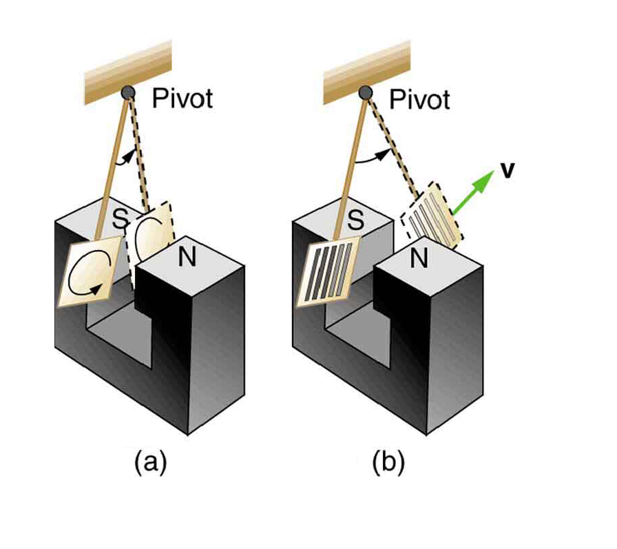
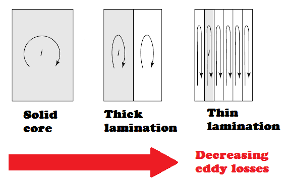
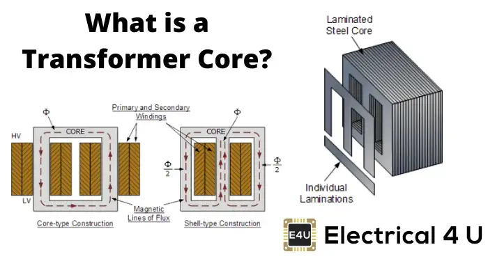
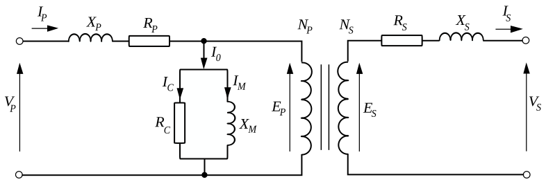

class: center, middle # EE-361 # PRACTICAL TRANSFORMERS ## Ozan Keysan [keysan.me](http://keysan.me) Office: C-113 <span class="meta">•</span> Tel: 210 7586 --- # Review: Losses in Magnetic Circuits ## Hysteresis Loss: Proportional to Frequency <img src="http://www.coolmagnetman.com/images/hysteresis.png" alt="Drawing" style="width: 600px;"/> --- # Losses in Magnetic Circuits ## Eddy Current Loss: Proportional to Frequency\\(^2\\) <img src="https://ahousebythepark.com/journal/wp-content/uploads/2009/02/induction.jpg" alt="Drawing" style="width: 400px;"/> --- # Eddy Current Losses ### Sometimes Useful (e.g. Eddy current brakes) -- <img src="https://i5.walmartimages.com/asr/6e0716e0-aa91-4b6b-b730-8e0d49acab67_1.cc98a42515430713a00bfd344d22b7e3.jpeg" alt="Drawing" style="width: 300px;"/> ### How does [elliptical machine work](https://youtu.be/ekZkN_jQkZk?t=3m21s)? --- # Eddy Current Losses ### Sometimes NOT Useful (e.g. reduces efficiency in motors) -- ## How can you minimize it? ([Hint](https://www.youtube.com/watch?v=Ttl7_q--CYI))  --- # Eddy Current Losses ## Use laminations instead of a solid core ### Thin laminations increases the resistance of eddy current path --  ### [Transformer Lamination Stamping](https://www.youtube.com/watch?v=e0MbosqTnk8) --- # Practical Transformers - ## Losses -- (Copper and Core) -- - ## Leakage flux -- - ## Magnetizing current -- - ## Hysteresis --- # Realistic Equivalent Circuit of a Transformer ## = Ideal Transformer + External Impedances --  --- # Winding Resistances: (\\(R_1, R_2\\)) or (\\(R_p, R_s\\)) - ## Resistance of the copper [Winding machine](http://www.youtube.com/watch?v=I_kJCLWwI2Y), [Winding for large transformers](http://youtu.be/yYFm3vxOVgw?t=24s), [Toroidal winding](https://www.youtube.com/watch?v=E-FpeRf3RvQ) -- - ### Question: In a step-down transformer which one is larger? ### \\(R_1\\) or \\(R_2\\)? -- - ## Copper Losses: \\(I^2 R \\) -- [Overloaded Transformers](https://youtu.be/D8EQPx-ptKk?t=41) --- # Leakage Flux -- ## Leakage Reactance: \\( X_{leakage} \\)  - ## Leakage through Air (Linear B-H, no hysteresis) --- # How to minimize leakage flux? -- <img src="http://www.ikes.16mb.com/pict/transformer/x_sect_s.jpg" alt="Drawing" style="width: 400px;"/> - ## Where is the secondary winding? --- # How to minimize leakage flux? <img src="http://sub.allaboutcircuits.com/images/52012.jpg" alt="Drawing" style="width: 400px;"/> --- # Magnetizing Flux -- ## A term represents the necessary flux in the core. ##Magnetizing Reactance: \\( X_{m} \\)  --- # Core Losses - ## Hysteresis Loss (\\(\propto\\) Frequency) <img src="http://www.coolmagnetman.com/images/hysteresis.png" alt="Drawing" style="width: 400px;"/> --- # Core Losses - ## Eddy Current Loss (\\(\propto\\) Frequency\\(^2\\))  --- ## How to minimize eddy current loss? -- ### Use Laminated Core <img src="http://www.electrical-forensics.com/Transformers/L05-04/TransIronCore-LG.jpg" alt="Drawing" style="width: 700px;"/> --- ## How to minimize eddy current loss? ## Use Laminated Core  --- #Excitation Current ## $$I_e(t) = I_c(t) + I_m(t)$$ ### Excitation Current = Core Loss Component + Magnetizing Component --- # Realistic Equivalent Circuit of a Transformer  ### \\(V_p , V_s, I_p, I_s \\): Primary, secondary voltages and currents -- ### \\(R_p , R_s\\): Primary, secondary coil resistances -- ### \\(X_p , X_s\\): Leakage Reactances --- # Realistic Equivalent Circuit of a Transformer  ### \\(R_c \\): Core Loss Resistance (to model hystresis/eddy current losses) -- ### \\(X_m\\): Magnetizing Reactance (due to non-zero \\(\int H dl\\) in the core) -- ### \\(E_p , E_s\\): Induced voltages in the ideal transformer --- ## There are a few ways to make analyze easier:  -- # Transfer Secondary Parameters to the Primary Side --- ## Transfer Secondary Parameters to the Primary Side ## Multiply with \\((N_p/N_s)^2\\) --- ## Transfer Secondary Parameters to the Primary Side ## Multiply with \\((N_p/N_s)^2\\) ### Optional: Transfer voltage and current to get rid of the ideal transformer --- # Simplification#2: ## Move parallel branch to the source side --  --- # Simplification#2: ## Move parallel branch to the source side <img src="./images/Transformer_equivalent_circuit_parallel_moved.svg" alt="Drawing" style="width: 800px;"/> ### Assumption voltage drop in \\(X_p\\) and \\(R_p\\) is negligible --- # Simplification: ## Combine Primary and Secondary Series Impedances -- --- ## Combine Primary and Secondary Series Impedances ### \\(R_{eq}=R_1+R'_2 = R_1 + (\frac{N_p}{N_s})^2 R_2\\) ### \\(X_{eq}=X_1+X'_2 = X_1 + (\frac{N_p}{N_s})^2 X_2\\) --- # Even More Simplification: ## Neglect Core Loss and Magnetizing Branch -- <img src="./images/Transformer_equivalent_circuit_combined_no_parallel.svg" alt="Drawing" style="width: 450px;"/> ## Assumption: \\(I_c\\) + \\(I_m\\) small enough compared to \\(I_p\\) --- # For Large Transformers (>100 kVA) ## Efficiency > 99% (see [Siemens brochure](https://assets.new.siemens.com/siemens/assets/api/uuid:6eb3018983d08ec8ff18f87c5f5f14b70d82669f/version:1506684852/power-transformers-from-30-to-over-1300mva-en.pdf)) ## Copper resistances (\\(R_{eq}\\)) can be neglected -- <img src="./images/Transformer_equivalent_circuit_combined_no_parallel.svg" alt="Drawing" style="width: 450px;"/> --- # For Large Transformers (>100 kVA) ## Efficiency > 99% (see [Siemens brochure](http://www.energy.siemens.com/hq/pool/hq/power-transmission/Transformers/Power%20Transformers/power-transformers-from-30-to-over-1300MVA_EN.pdf)) ## Copper resistances (\\(R_{eq}\\)) can be neglected <!-- #Examples: # Problem 1 ### At no-load a transformer has a loss of 50 W and draws a current of 2 A, when the applied voltage is 230 Vrms. ### Assuming the parallel branch is moved to the primary side, find: ### a) No-load power factor, ### b) Core-loss current (\\(I_c\\)), ### c) Magnetizing current (\\(I_m\\)), ### d) Xm, Rc # Phasors for Transformers # Resistive Load # Inductive Load #Problem 2 ### A 2400-V:460-V transformer has a series leakage reactance of 37.2 Ω as referred to the high-voltage side. Asssume the parallel branch is neglected. ### A load connected to the low-voltage side is absorbing 25 kW at unity power factor, and the voltage at the secondary-side is 450 V. ### Calculate the corresponding voltage and power factor as measured at the high-voltage terminals. # Problem 3 ### The resistances and leakage reactances of a 60-kVA, 60-Hz, 2400-V:240-V distribution transformer are ### R1 = 0.68 Ω R2 = 0.0068 Ω ### Xl1 = 7.8 Ω Xl2 = 0.0780 Ω ### a. Draw the equivalent circuit referred to (i) the high- and (ii) the low-voltage sides. Neglect the parallel branch. # Problem 3 ### The resistances and leakage reactances of a 60-kVA, 60-Hz, 2400-V:240-V distribution transformer are ### R1 = 0.68 Ω R2 = 0.0068 Ω ### X1 = 7.8 Ω X2 = 0.0780 Ω ### b. The transformer delivers rated kVA to a load on the low-voltage side with a lagging power factor of 0.85. If the voltage on the load is 230V. ### Find the terminal voltage of the high-voltage side. --- ## You can download this presentation from: [keysan.me/ee361](http://keysan.me/ee361)